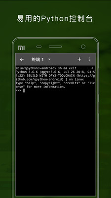

QPython 对比评测：手机上跑 Python，它真的比同行好用吗？
把 QPython 放进移动端 Python 工具的坐标系里，看看它凭什么在同类中独树一帜，又在哪些场景下力有不逮。
移动端 Python 的格局与 QPython 的位置
在手机上写 Python 这件事，说起来尴尬——大厂几乎没正眼瞧过这个赛道。桌面端有 PyCharm、VS Code 这两尊大佛压着，移动端要么是 PC 远程连过去写个 notebook 应付一下，要么就是一些轻量的 REPL 玩具凑合着用。
QPython 是少数认真对待「手机作为独立 Python 开发平台」这件事的。官网上的产品矩阵能印证这一点——它不是一个只能跑几行代码的在线解释器壳子，而是一套完整的开发环境：编辑器 + 终端 + QNotebook + QSL4A API 层，再加上一整套 Android 系统集成。
这个赛道里能打的对手不多。Pydroid 3 是最接近的竞品，同样提供了编辑器和 Android API 封装。Termux 则走另一条路——模拟 Linux 终端，给你一个完整的包管理器和 shell 环境，但对 Python 的 GUI 和系统交互支持要自己折腾。QPython 夹在中间，但它的定位更明确：给想直接调用手机硬件、做自动化、或者在没有电脑时还能写点东西的人用。

差异化优势：QPython 赢在这三件事
QSL4A：把 Android API 变成一行 Python
这是 QPython 最核心的差异化点。其他移动端 Python 方案要么根本碰不到 Android 硬件 API，要么只能通过 JNI 间接调用、写起来痛苦得不行。QPython 内置的 QSL4A（Scripting Layer for Android）把摄像头、传感器、GPS、蓝牙、NFC、通知等系统能力全部封装成了直观的 Python 方法：
from androidhelper import Android
droid = Android()
droid.takePicture("snap.jpg") # 拉起系统相机拍照
droid.startLocating() # 启动 GPS
droid.startSensingTimed(1, 1000) # 开始读加速度计，每秒一次
droid.makeToast("手机被晃了！") # 弹系统通知这种调用方式对 Python 开发者来说没有任何学习成本——就是 import 一个对象然后调方法。传感器自动化那套「读数据 → 判条件 → 执行动作」的框架之所以能这么顺手，全靠 QSL4A 把底层 Android API 的复杂性给吃掉了。
QNotebook：在手机上跑 Jupyter
手机屏幕上写长文档一直是个反直觉的场景，但 QPython 做对了这件事。QNotebook 基本复刻了 Jupyter Notebook 的交互模式——代码单元、markdown 单元、执行结果内联显示、Pillow 画图、IPython display 展示，这套组合拳让手机也能做数据分析笔记。
我试过在 QNotebook 里跑一段简单的传感器数据采集 + Matplotlib 可视化，代码单元执行、图像内联显示、markdown 单元格写注释，整套流程跟在 PC 上用 Jupyter 的体验几乎没差。这一点 Pydroid 3 也有，但 QPython 对中文编码的处理更稳、内置的第三方库也更全。
脚本执行的灵活性
QPython 在脚本执行上给了三种入口：QEditor 里点 Run、主界面「运行脚本」文件选择器、REPL 里 exec 或 subprocess。三者各有用场——日常开发 QEditor 最顺手，需要在 REPL 里动态生成脚本或调试变量用 exec，不想污染 REPL 变量空间就用 subprocess 起子进程。
这种多入口设计看起来琐碎，但在移动端场景下确实重要。屏幕小、操作路径长，给用户多一种选择就少一次切回主界面的操作。

它的取舍：为这些优势付出了什么
三十多条权限，是真的都要给吗？
QPython 安装包从官方下载拿了装上，一启动就会申请 30+ 条 Android 权限，这个数字放在任何其他 App 身上都会让人警觉。但实际拆分下来，每条权限背后都对应一个功能模块：存储权限是读写脚本文件，互联网权限是下载第三方包，相机权限是摄像头 API，悬浮窗权限是后台脚本运行……
QPython文档里给了一套分类指导：存储、互联网、前台服务、悬浮窗这几类必须授予，位置和相机建议授予，蓝牙、NFC、开机自启等按需授予，写入设置、修改手机状态这类敏感权限坚决不给。按这套策略来，实际要给的权限也就十来条，不算离谱。
后台运行是个技术活
Android 对后台进程的敌意是 QPython 绕不过去的坎。传感器自动化脚本、定时拍照这类长任务，很容易被系统杀掉。解决办法有四个：用前台服务让 QPython 在通知栏常驻、电池优化设为无限制、调用 wakeLock 防止休眠、定时写个心跳日志让 Android 觉得脚本还在干活。
这些操作本身不复杂，但属于「你得知道要做这些」的隐性门槛。第一次上手的人很可能脚本跑了十分钟发现被系统静默掐了，还以为是代码有问题。
仅限 Android 生态
这是最直接的平台限制。iOS 上没有真正意义上的 QPython 替代方案（iOS 的沙盒策略和权限模型决定了它不会允许这种级别的系统集成）。Mac 和 Linux 上倒是有 termux 或者直接装 Python，但硬件 API 层就完全不是一回事了。
选购结论
如果你需要一个能直接操控手机硬件、跑自动化脚本、在没有电脑时还能写点数据分析笔记的移动端 Python 环境，QPython 目前几乎没有对手。它把 Android API 封装成 Python 调用这一点做得太漂亮了，传感器自动化、摄像头拍照、蓝牙通信这些场景写起来就跟操作普通对象一样自然。
如果你只是想在手机上临时跑几行 Python 代码、做点简单的算法验证，Pydroid 3 或者 Termux + Python 的组合可能更轻量——QPython 的完整性恰恰意味着它更重、权限要求更多。
如果你的主力设备是 iPhone，那这个赛道基本不用看了。
一句话推荐：有 Android 手机、想把它变成一个可编程的 IoT 设备或者随时能掏出来写 Python 的便携终端，装一个试试就知道了。
QPython 相关的开发文档和使用示例，我同时放到了GitHub、Gitee 和 GitCode 三个仓库里——国内访问 Gitee 和 GitCode 通常比 GitHub 更稳，三个仓库的内容保持同步，随意选一个克隆就行。